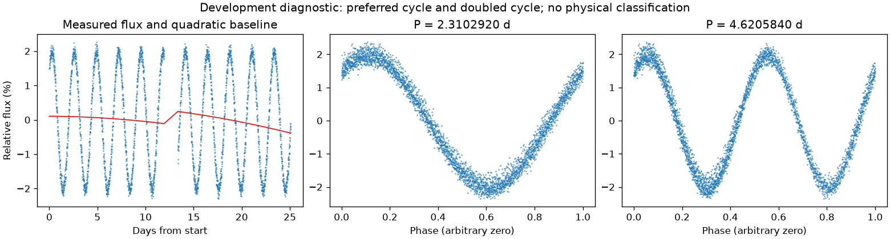
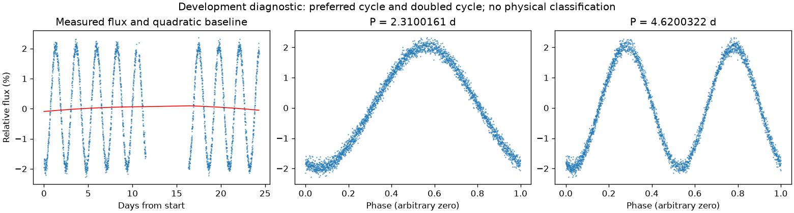

有重复信号，来源尚未充分检查
亮度重复周期约 2.31015405 天。这是优选亮度周期，未给出正式误差或物理分类。
第三版周期：2.3102920117374106 天；状态：preferred_lightcurve_cycle。

左图红线是缓慢基线；右面两图去除该基线。若未通过周期要求，两图只展示得分最高的竞争解释。
| 竞争周期（天） | 预测方法与改善 | 各组改善 | 通过初筛 |
|---|---|---|---|
| 2.3102920 | 交替循环：98.4% | 98.3% / 98.7% | 是 |
| 4.6198274 | 交替循环：98.3% | 98.6% / 98.1% | 是 |
| 4.3970184 | 交替循环：18.1% | 13.0% / 23.5% | 否 |
| 4.8987978 | 交替循环：5.2% | -10.8% / 25.7% | 否 |
| 2.0416324 | 交替循环：5.2% | 6.8% / 3.7% | 否 |
| 2.6660601 | 交替循环：3.4% | 9.8% / -3.2% | 否 |
| 1.3610703 | 交替循环：-20.3% | -22.4% / -18.2% | 否 |
| 1.0139188 | 交替循环：-23.7% | -24.4% / -23.0% | 否 |
“预测改善”衡量用一组周期的形状预测另一组，比只有缓慢基线好多少；负数表示更差。搜索和预测共用了资料，因此这不是可信概率，也不是独立验证。
第三版周期：2.3100160963497705 天；状态：preferred_lightcurve_cycle。

左图红线是缓慢基线；右面两图去除该基线。若未通过周期要求，两图只展示得分最高的竞争解释。
| 竞争周期（天） | 预测方法与改善 | 各组改善 | 通过初筛 |
|---|---|---|---|
| 2.3100161 | 交替循环：99.2% | 99.2% / 99.3% | 是 |
| 4.6208129 | 交替循环：99.1% | 99.1% / 99.2% | 是 |
| 2.0381701 | 交替循环：20.7% | 12.1% / 30.8% | 是 |
| 2.6582835 | 交替循环：16.7% | 16.1% / 17.4% | 否 |
| 5.3176009 | 交替循环：-3.5% | 23.1% / -26.7% | 否 |
| 4.0769480 | 交替循环：-53.0% | -78.0% / -17.5% | 否 |
| 1.3509422 | 交替循环：-60.3% | -61.6% / -58.9% | 否 |
| 1.0138708 | 交替循环：-82.9% | -92.7% / -73.5% | 否 |
“预测改善”衡量用一组周期的形状预测另一组，比只有缓慢基线好多少；负数表示更差。搜索和预测共用了资料，因此这不是可信概率，也不是独立验证。